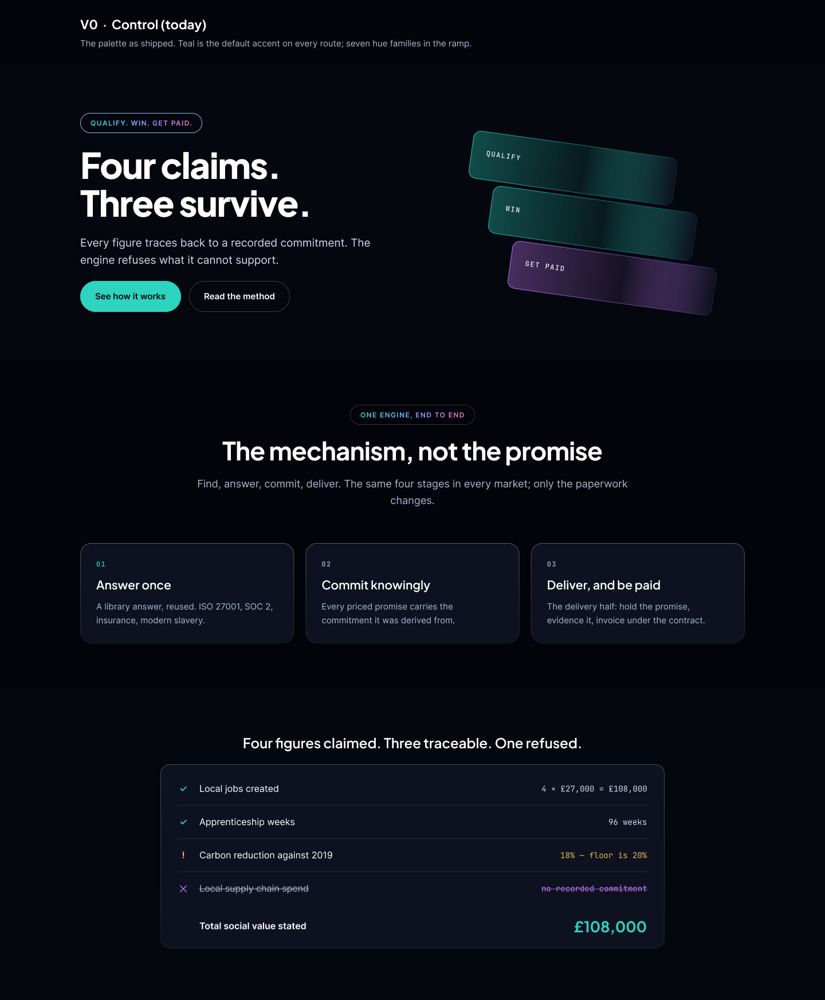

V0 — Control (today)
The palette as shipped. Teal is the default accent on every route; 7 hue families in the ramp.

What it does to the semantic system
Teal is verified AND interactive AND the generic accent. Three jobs, one hue.
Measured on this render
| Painted hue (C* ≥ 22) | 1.312% of pixels |
|---|---|
| Teal | 0.441% of pixels · 33.6% of all paint (baseline) |
| Hue families painted | 3 |
| Neutral ground | 76.99% |
Palette
verified
#2DD4BFrefused#C77DFFat risk#E8B84Binteractive#2DD4BF
floor
#03040Abg#05070Eraised#0E1220lit#161B2F
WCAG AA PASS
Worst text-on-surface pair: refused on lit = 6.34:1 (AA needs 4.5). Button label on its own fill: 10.81:1.
body 20.13:1 · sub 14.48:1 · muted 9.88:1 · verified 10.81:1 · refused 7.48:1 · at-risk 10.92:1 · interactive 10.81:1 (all against --c-bg; every value also checked against floor, raised and lit)